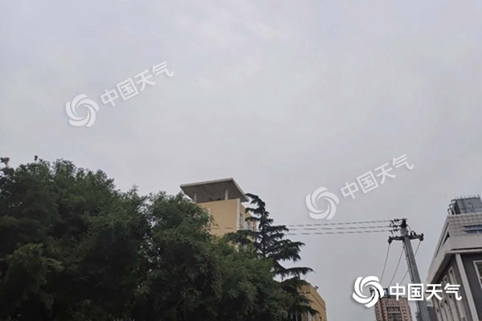

中国天气网讯 今天（9日），北京告别连续两日的高温天气，气温下降明显，并将有雷雨现身，提醒公众出行携带雨具，注意防雷避雨和交通安全。 昨天，北京继续高温酷热天气，北京南郊观象台的最高气温达到37.3℃，创今年来气温新高。至此，北京今年6月上旬的高温日数已经达到3天。1971年至2019年的气象大数据显示，北京在6月上旬高温日数超过3天的年份仅有两年，最多的一年是2001年，在6月上旬出现6天高温，2007年以4天位列第二。今年6月上旬的前8天里，高温日数已经排到历史同期第三位。

北京今日雷雨来“退烧” 明日晴晒回归或再现高温今晨北京天空阴沉。
今天，北京将和连续两日的高温天气挥手作别，气温下降明显，还将有雷雨现身。最新预报显示，今天白天北京阴天间多云，西部北部地区有雷阵雨，北转南风2、3间4级，最高气温30℃；今天夜间阴，大部分地区有雷阵雨，南转北风1、2级，最低气温22℃。 明天起，北京的晴热天气再度回归。预计明天北京天气晴朗，最高气温有望再次达到35℃。
专家提醒，北京今天有雷雨天气，出行请携带雨具，注意防雷避雨和交通安全。
转载请注明“来源：中国天气网”